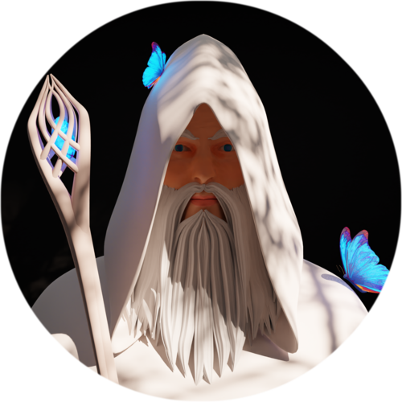
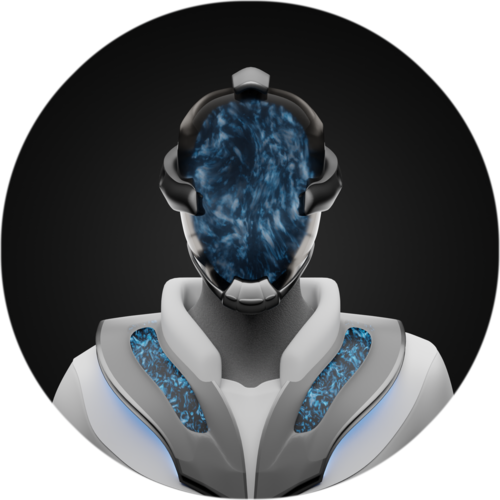

I have a background in finance and psychology. Before jumping into the crypto space I run several businesses. I was very fortunate to be able to use my expertise in the emerging crypto world from the very beginning.

I am a trained photographer and studied mechanical engineering afterwards. To combine both jobs at its best I am working currently in the light and vision department as an project coordinator.